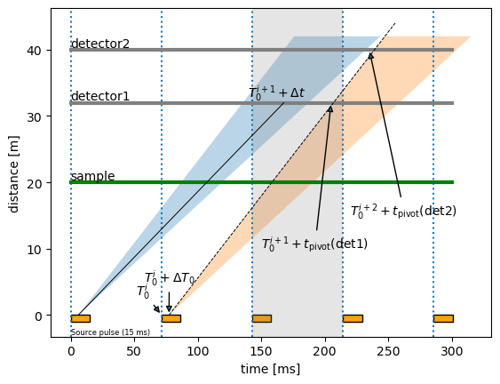
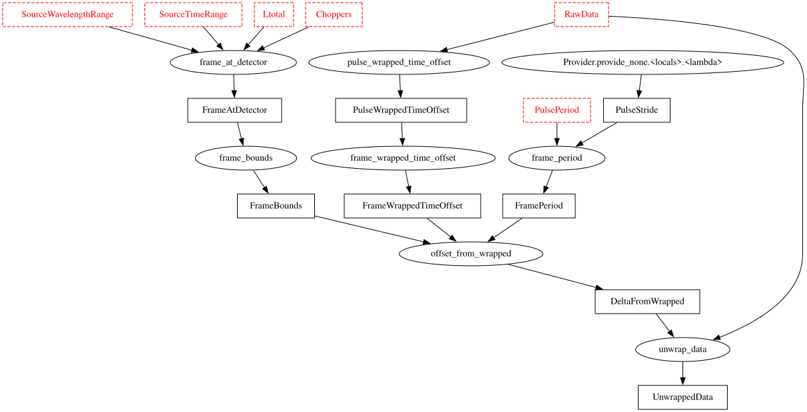
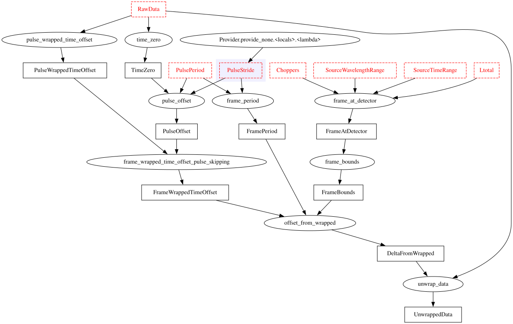

Frame Unwrapping#
Context#
At time-of-flight neutron sources recording event-mode, time-stamps of detected neutrons are written to files in an NXevent_data group. This contains two main time components, event_time_zero and event_time_offset. The sum of the two would typically yield the absolute detection time of the neutron. For computation of wavelengths or energies during data-reduction, a time-of-flight is required. In principle the time-of-flight could be equivalent to event_time_offset, and the
emission time of the neutron to event_time_zero. Since an actual computation of time-of-flight would require knowledge about chopper settings, detector positions, and whether the scattering of the sample is elastic or inelastic, this may however not be the case in practice. Instead, the data acquisition system may, e.g., record the time at which the proton pulse hits the target as event_time_zero, with event_time_offset representing the offset since then.
We refer to the process of “unwrapping” these time stamps into an actual time-of-flight as frame unwrapping, since event_time_offset “wraps around” with the period of the proton pulse and neutrons created by different proton pulses may be recorded with the same event_time_zero. The figures in the remainder of this document will clarify this.
Default mode#
Often there is a 1:1 correspondence between source pulses and neutron pulses propagated to the sample and detectors.
[1]:
from frameunwrapping import default_frame_diagram
default_frame_diagram().show()

In the figure above the index i labels source pulses. We define:
\(T_0^i\) is the
event_time_zerorecorded in anNXevent_datagroup. These times are indicated by the vertical dotted lines.\(T_0^{i+1} = T_0^i + L_0\) where the frame length \(L_0\) is defined by \(L_0 = 1/f_0\), given a source frequency \(f_0\).
\(\Delta T_0\) is the offset from \(T_0^i\) at which the neutrons are “emitted”. This may be zero (or half the pulse length) if the full pulse length is used, but choppers such as resolution choppers may extract a section of the pulse that is not aligned with the start of the full pulse. This offset can also be used to take into account a potential difference between the timing system’s definition of the pulse time and the actual beginning of the neutron pulse exiting, e.g., the moderator.
The black solid line within the first pulse (blue) indicates a neutron detected at \(T_0^{i+1} + \Delta t\). \(\Delta t\) is the
event_time_offsetin anNXevent_datagroup. This value is recorded for every neutron and gives the offset from the latest (previous)event_time_zero(\(T_0^j\)), i.e., the time difference to the previous vertical dotted line.
To compute the time-of-flight for a neutron, we need to identify which source pulse it originated from. Consider the shaded vertical band above, indicating the time during which arriving neutrons are associated with \(T_0^{i+1}\). For, e.g., detector 1 we observe:
First (small
event_time_offset\(\Delta t\), to the left of the dashed black line) we see the slowest neutrons from N (in this case N=2) source pulses earlier.Then (larger
event_time_offset\(\Delta t\), to the right of the dashed black line) we see the fastest neutrons from N-1 (in this case N-1=1) source pulses earlier.Typically there is is an intermediate region where no neutrons should be able to traverse the chopper cascade. Neutrons detected in this time interval must thus be background from other sources.
To compute the time-of-flight we first add an integer multiple of the frame length to event_time_offset (and subtract the equivalent from event_time_zero). Within a given frame (indicated above by a band between two dotted vertical lines, such as the grey shaded band) there is a pivot time: Neutrons with event_time_offset before the pivot time originated one source frame before neutrons after the pivot time. As illustrated in the figure, the pivot time \(t_\text{pivot}\)
depends on the detector or rather the distance of the detector (or monitor) from the scattering position.
Unwrapping#
The pivot time and the resulting offsets can be computed from the properties of the source pulse and the chopper cascade, using the scippneutron.tof.unwrap module:
[2]:
import sciline as sl
from scippneutron.tof import unwrap
The module performs the following transformations for unwrapping the time stamps:
[3]:
pl = sl.Pipeline(unwrap.unwrap_providers())
pl.visualize(unwrap.UnwrappedData)
[3]:

It is currently unclear if the simple chopper-cascade model used in the current implementation is sufficient for all use-cases. In practice it may be that FrameBounds will be defined or provided differently.
Time-of-flight computation#
After unwrapping, the time-of-flight can be computed by defining an origin time and a distance \(L_1\). If we, e.g., define the start of time-of-flight at a chopper, we must also adapt the distance \(L_1\) between the origin and the sample which will be used later on to compute, e.g., the wavelength or energy of the neutron. If defined via, e.g., a calibration, this can also be used to deal with curved guides or other non-linearities in the neutron path.
[4]:
pl = sl.Pipeline(unwrap.time_of_flight_providers())
pl.visualize(unwrap.TofData)
[4]:

Time-of-flight origin#
The origin time (used above) could be defined by a chopper, a calibration, or even set by hand. The module currently provides a naive definition via the chopper cascade:
[5]:
pl = sl.Pipeline(unwrap.time_of_flight_origin_from_choppers_providers())
pl.visualize(unwrap.TimeOfFlightOrigin)
[5]:

With WFM we have the following task graph:
[6]:
pl = sl.Pipeline(unwrap.time_of_flight_origin_from_choppers_providers(wfm=True))
pl.visualize(unwrap.TimeOfFlightOrigin)
[6]:

Pulse-skipping mode#
Choppers may be used to skip pulses, for the purpose of a simultaneous study of a wider wavelength range. Conceptually this looks as follows:
[7]:
from frameunwrapping import frame_skipping_diagram
frame_skipping_diagram().show()

The task graph that was given above for the non-pulse-skipping mode is then extended as shown below:
[8]:
pl = sl.Pipeline(unwrap.unwrap_providers(pulse_skipping=True))
pl.visualize(unwrap.UnwrappedData)
[8]:
